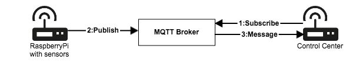

COS'È IL PROTOCOLLO MQTT
MQTT è un protocollo di pubblicazione/sottoscrizione per lo spostamento dei dati tra un dispositivo IoT e un server.
A differenza del protocollo HTTP, MQTT è guidato dagli eventi e consente il push dei messaggi ai client.
Questo tipo di architettura separa i client gli uni dagli altri per consentire una soluzione scalabile dove produttori di dati e consumatori di dati sono indipendenti.
Sviluppato originariamente nel 1999 da Andy Standford-Clark e Arlen Nipper per monitorare oleodotti e gasdotti su connessioni satellitari remote.
Oggi, tutte le principali piattaforme IoT, i provider di servizi cloud IoT e molti gateway e dispositivi IoT edge supportano la connettività con MQTT.
MQTT è utilizzato in molti settori e applicazioni come le telecomunicazioni, l'energia, la sicurezza pubblica, i prodotti connessi e altro ancora.
I principali vantaggi di MQTT sono:
- Leggero ed efficiente
- Riduce al minimo risorse e larghezza di banda.
- Abilita la comunicazione bidirezionale tra dispositivi e server.
- Scalabile fino a milioni di dispositivi.
- Supporta sessioni persistenti tra dispositivo e server per ridurre il tempo di riconnessione richiesto su reti inaffidabili.
- Specifica i livelli di qualità del servizio (QoS).
- I messaggi possono essere crittografati con TLS e supportano i protocolli di autenticazione del client.
Architettura di pubblicazione/sottoscrizione MQTTS
CONCETTI DI BASE
Al centro di MQTT ci sono il broker MQTT e i client MQTT. Il broker gestisce l'invio dei messaggi tra il mittente e i vari destinatari. Un client MQTT inoltra un messaggio a un broker e altri client possono iscriversi al broker per ricevere messaggi.
Ogni messaggio MQTT include un argomento. Un client pubblica un messaggio su un argomento specifico e i client MQTT definiscono gli argomenti che desiderano ricevere. Il broker MQTT utilizza gli argomenti e l'elenco dei dispositivi iscritti per inviare messaggi ai client appropriati.
Un broker MQTT è in grado di memorizzare nel buffer i messaggi che non possono essere inviati ai client MQTT che non sono connessi.
Esistono due versioni della specifica: MQTT 3.1.1 e MQTT 5. La maggior parte dei broker MQTT commerciali supporta MQTT 5, ma molti dei servizi cloud gestiti IoT utilizzano MQTT 3.1.1.
Esempio di comunicazione tra il client del sensore e il centro di controllo tramite MQTT